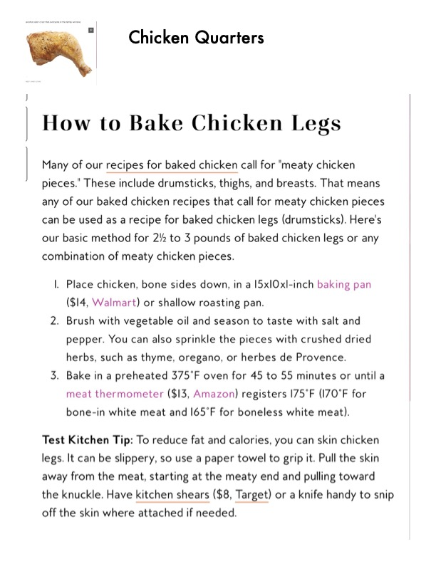

How to Bake Chicken Legs

Original cookbook page 200
Simple method for baking chicken drumsticks or any combination of meaty chicken pieces with basic seasonings.
Cook: 45-55 minutes • Total: 45-55 minutes
Ingredients
- 2½ to 3 pounds of baked chicken legs (drumsticks) or any combination of meaty chicken pieces
- Vegetable oil
- Salt and pepper (to taste)
- Optional: crushed dried herbs such as thyme, oregano, or herbes de Provence
Instructions
- Place chicken, bone sides down, in a 15x10x1-inch baking pan or shallow roasting pan.
- Brush with vegetable oil and season to taste with salt and pepper. You can also sprinkle the pieces with crushed dried herbs, such as thyme, oregano, or herbes de Provence.
- Bake in a preheated 375°F oven for 45 to 55 minutes or until a meat thermometer registers 175°F (170°F for bone-in white meat and 165°F for boneless white meat).
📝 Recipe Notes
Category: Chicken Quarters. Test Kitchen Tip: To reduce fat and calories, you can skin chicken legs. It can be slippery, so use a paper towel to grip it. Pull the skin away from the meat, starting at the meaty end and pulling toward the knuckle. Have kitchen shears or a knife handy to snip off the skin where attached if needed.
Recipe #200 from collection